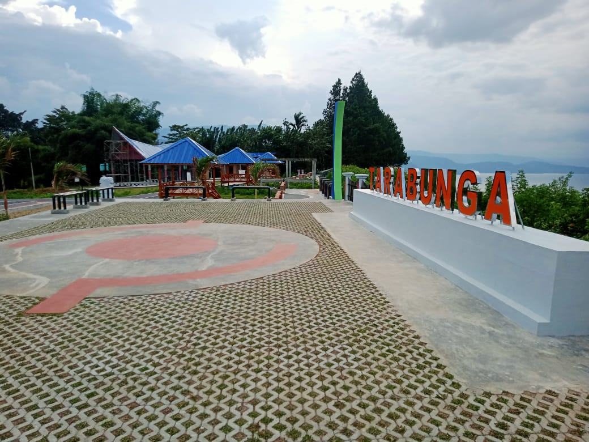

Desa Tarabunga
Desa Tarabunga terletak di Kecamatan Tampahan Kabupaten Toba, secara Topografis Desa Tarabunga terletak pada ketinggian 1024 M DPL dan letak geografis antara 2'21'6'' LU 99'1'38'' BT memiliki luas wilayah ± 189 KM² Persegi.Desa Tarabunga memiliki 5 (lima) Dusun yaitu: Dusun 1 (Satu), Dusun 2 (Dua), Dusun 3 (Tiga),Dusun 4 (Empat) dan Dusun 5 (Lima).
Jumlah penduduk Desa Tarabunga berdasarkan Profil Desa Tahun 2020 sebesar 571 jiwa dengan jumlah rumah tangga 156 KK, dan jumlah pendudk Desa Tarabunga saat ini sebesar 163 KK.
Batas Wilayah
Desa Tarabunga mempunyai batas-batas wilayah sebagai berikut :
- Sebelah Utara : Danau Toba
- Sebelah Selatan : Desa Lintong Nihuta
- Sebelah Timur : Danau Toba
- Sebelah Barat : Desa Lintong Nihuta
Potensi Keunggulan Desa
Desa Tarabunga memiliki keunggulan Panorama Alam yang indah dan Pantai Sosor Pasir. Desa Tarabunga merupakan desa berkembang sejak ditetapakan sebagai kawasan wisata.